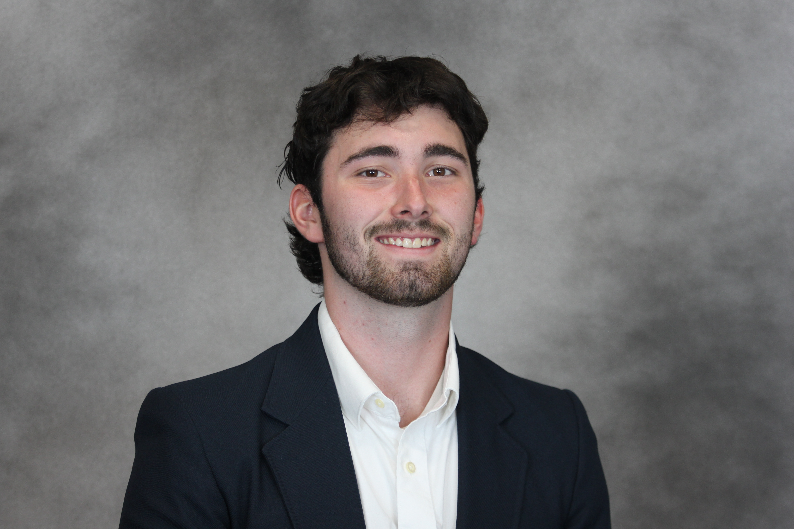

Electrical Engineering | Embedded Systems & Analog Circuit Design
Major: Electrical Engineering
Focusing on electronic design, discrete components, and microcontroller programming. Actively engaging in collaborative laboratory environments to conceptualize and build physical electronic hardware.
Tech Stack: C++, Python, Flask, SQLite, M5StickCPlus, Groq API
Engineered an end-to-end IoT system capturing I2S audio via an M5Stick, utilizing a static IP subnet to bypass mobile hotspot DHCP drops. Transmitted raw binary data to a Flask backend where GenAI models (Whisper & Llama 3) transcribed and structured the audio into an automated web-based to-do dashboard.
Tech Stack: Analog Circuit Design, BJTs, MOSFETs, MIDI
Designed and constructed a hardware-based MIDI synthesizer on a breadboard. Explicitly utilized discrete transistors (BJTs and MOSFETs) instead of integrated circuits, interfacing with an Arturia Keystep to control and shape the analog audio signals.
Tech Stack: C++, Python, M5Stick
Developed a digital photo frame system integrating Python scripts running via terminal to communicate with Arduino code, rendering images accurately on the M5Stick display.